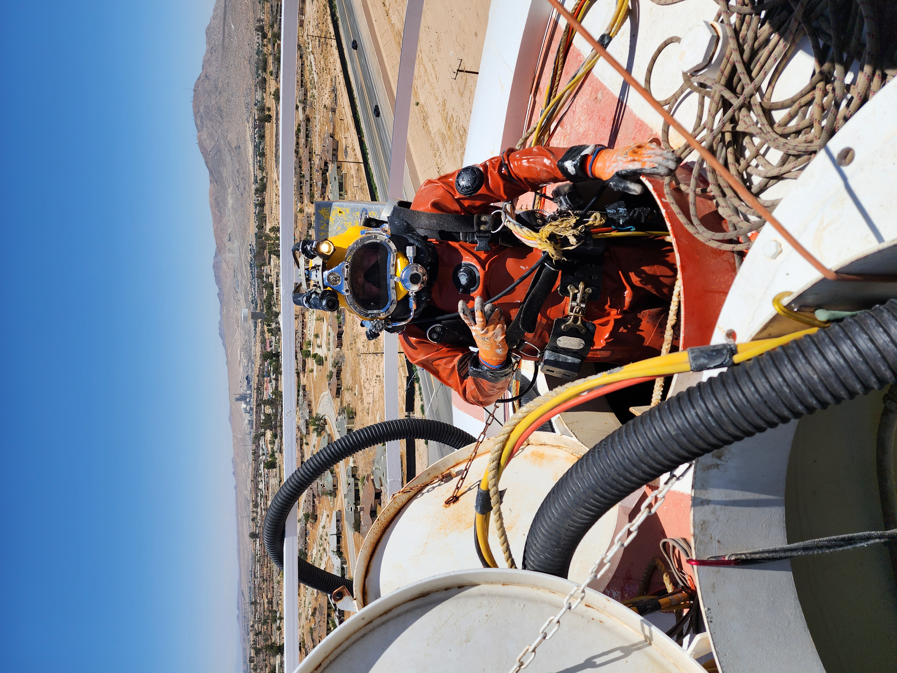

I am 31 years old and i have just started my coding carrer and it is going really good. Before this I was a commerical diver traveling the united states doing different kinds of jobs all on, in, and around the water. I have demolished old lock and damns, Salvaged new and old fishing vessels alike, and countless other jobs. I was a diver for almost 8 years and now I am looking for a new challenge.
I graduated Corning Union High School in 2011 after which i attended Butte Community College for 2 years not really knowing what i wanted to do with my life yet
After a few years of working I went to Seattle, WA to the Divers Institute of Technology where I learned the basics of what it took to be a commerical diver and obtained my certification to work as a Commercial Diver.
From 2011 after graduating for high school I worked at subway for a year or so and other than working on a farm when I was 10 years old it was my first real job I had
After working at subway for a year and going to communtity College for 2 years me and a friend of mine moved to Kalispell, MT. My first week moving I got my second job as a server at Applebees where I worked for 2 years. Meanwhile during the winter months I was employed as a chair lift attendant at the Whitefish Mountain Resort.During the Summer months I was working as a Zip Line Tour Guide at the Mountain which was an awesome experience.
Winter of 2014 I tried teaching kids how to snowboard which was a huge learning experience since I had no prior teaching experience, but since I was a skilled snowboarder to begin with I was ready for the challenge and getting to have fun playing in the snow was a great bonus.
After 7 months of school at Divers Institute of Technology I got my first diving job at a small mom and pop shop on the Columbia River at which I did a bunch of inspections after the cargo ships off-loaded their cargo to make sure they hadn't damaged their propellers or the hull. I also did alot of construction jobs such as pier repair and house boat maintenance.
Global Diving and Salvage is a union company where I spent the majoriaty of my time with the company doing salvage work on the Columbia River and Panama City Beach, FL. As well as 8 Months in 2019 in IL working on the Olmsted Lock and Damn.
Covid lockdown left me little choice for work so I took some time off of diving and worked at a lumber mill in red bluff california as a chain puller which is just to say I sorted a lot of wood in different size piles for 10 hours a day(Very boring but it paid the bills).
From August to December(I Beilive) I worked in Pensacola, FL working on the bridge pouring concrete underwater on the footers of the bridge. In December I decided to take it a bit slower and do some Potable Water Diving
Potable Water Diving is cleaning and inspecting drinking water for town districts so they dont have to drain all the water out and waste millions of dollars. Instead we go in (Disinfected of course) and we clean and inspect the whole tank while it is full that way it gets clean and the customer doesnt have to drain the water out.
Unknown